El alemán Dieter Baumann , medalla de oro de 5.000 metros en los Juegos Olímpicos de Barcelona , volverá a competir este domingo tras siete meses de sanción por dopaje , a pesar de persistir el suspense sobre el denominado " caso del dentífrico ".

La Comisión Jurídica de la Federación Alemana de Atletismo dio luz verde hoy , viernes , a su vuelta a los estadios , que se materializará con su participación en el mitin " Live 2000 " de Nuremberg , donde saldrá con el dorsal número 131.
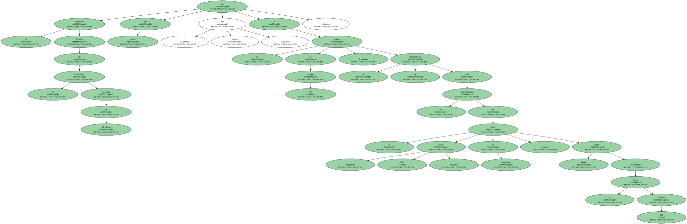" Es la decisión lógica , resultante de la situación de los indicios " , manifestó Baumann , horas después de conocerse el veredicto federativo.
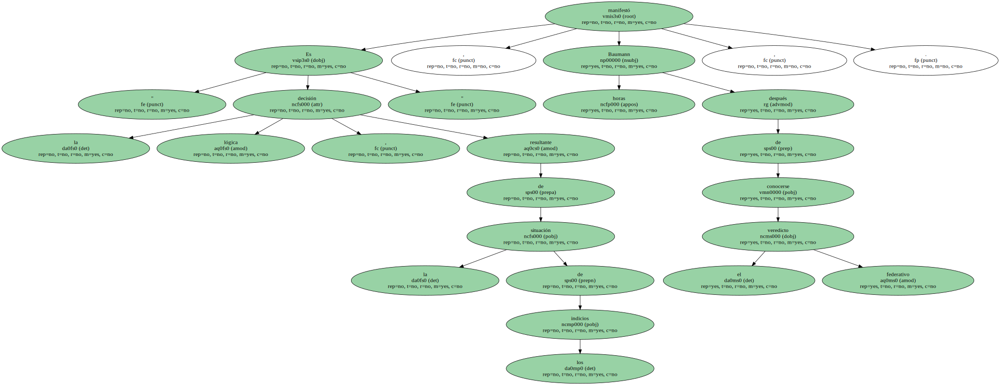El fallo de la comisión jurídica supone un capítulo más en un caso que asemeja una novela policiaca , donde intervienen supuestas conspiraciones criminales o manipulación de pasta de dientes.
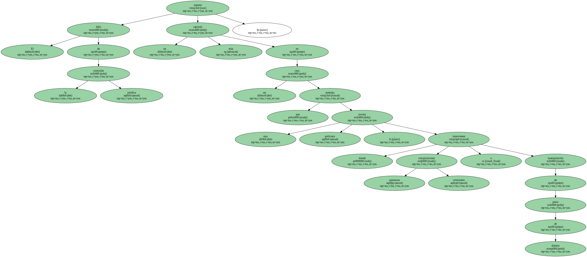Sin embargo , la reincorporación de Baumann como máxima estrella del mitin del domingo no pone punto final a su lucha contra la sanción , puesto que para ello es necesaria la ratificación de la instancia superior internacional , la IAAF.
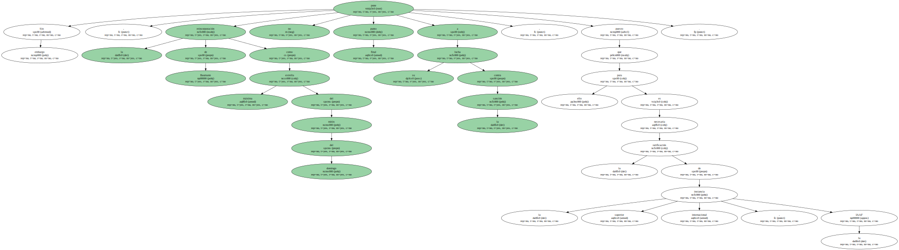El caso Baumann empezó el otoño pasado , al dar positivo de nandralona en dos controles consecutivos , realizados en sendos entrenamientos de octubre y noviembre de 1999.
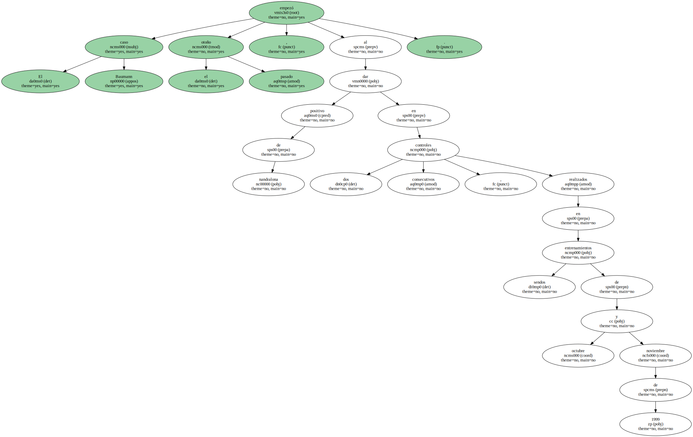El afectado ha jurado que es inocente y que cree que ha sido víctima de una conspiración con el propósito de arruinar su futuro y su reputación de atleta " limpio ".
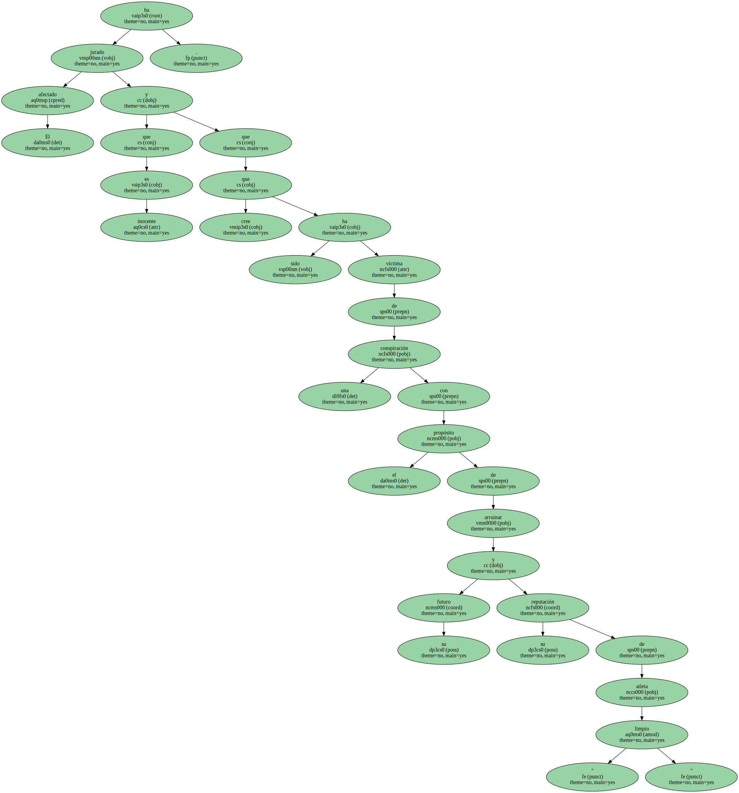En su intento por demostrar que no se dopó , presentó denuncia contra desconocidos , aportando como " cuerpo del delito " varios tubos dentífricos presuntamente manipulados para que diera positivo.
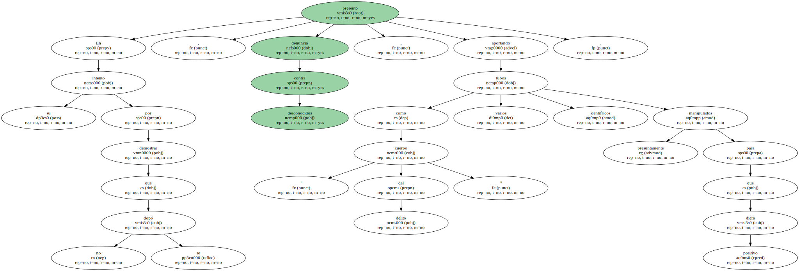Baumann puso en acción a detectives y presentó batalla durante meses , en los que algunos medios le han tratado de esquizofrénico afectado de manía persecutoria.
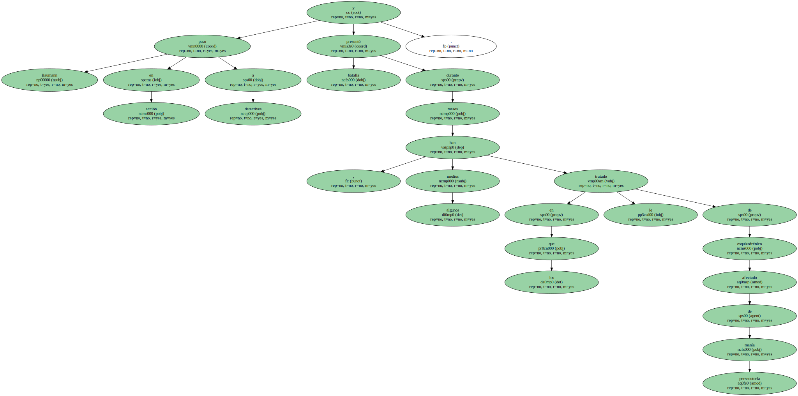Finalmente , la Comisión Jurídica encargó un análisis de su vello púbico con el objetivo de tratar de establecer si fue " sujeto pasivo " o " activo " de ese enrevesado caso de dopaje.
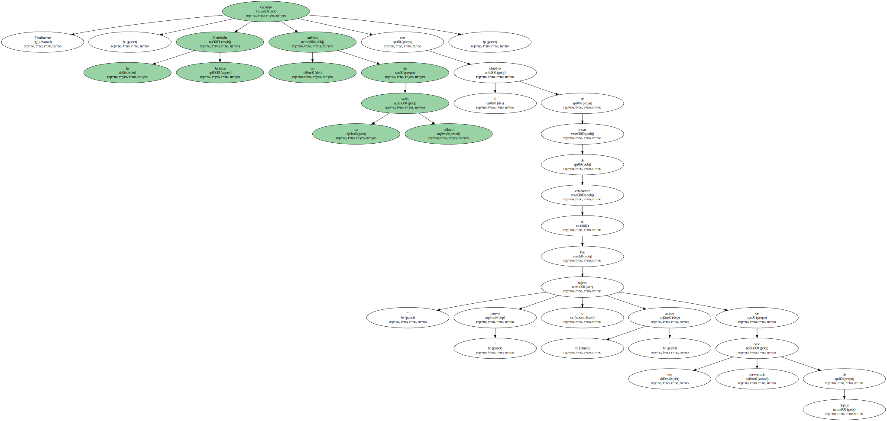La Federación parece que cree ahora en la versión de Baumann y su fallo le faculta para tomar la salida el domingo , en un mitin del que espera conseguir la calificación para los Juegos de Sydney.
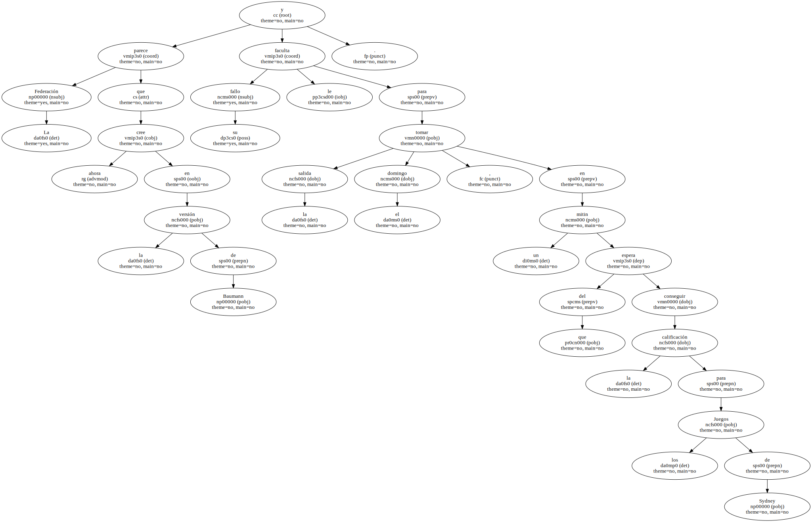Sin embargo , para que se le levante la suspensión por dos años que se le dictaminó hace siete meses debe actuar aún la IAAF y su decisión podría demorarse aún varias semanas.
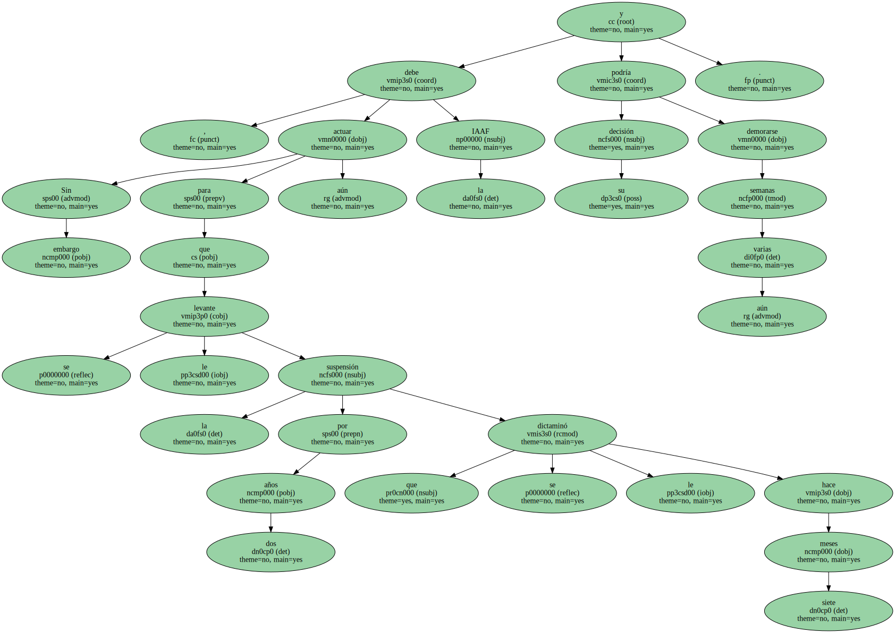Tampoco se descarta que el veredicto de la instancia internacional sea contrario a los deseos de Baumann , como ocurrió con Marlene Ottey , a quien la IAAF mantuvo la suspensión a pesar de haber sido absuelta por la Federación Jamaicana.
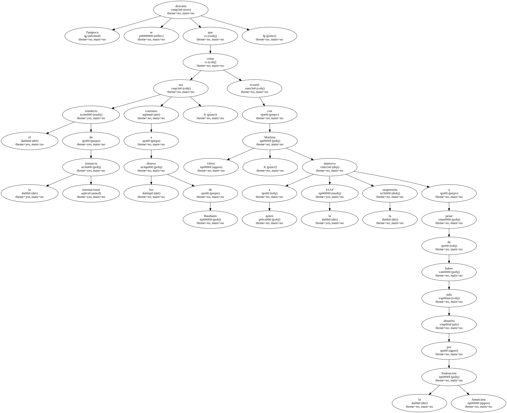A la espera de que se oficialice o no el levantamiento de la sanción , la prueba de confianza dada hoy por la Federación germana ha levantado las primeras críticas.
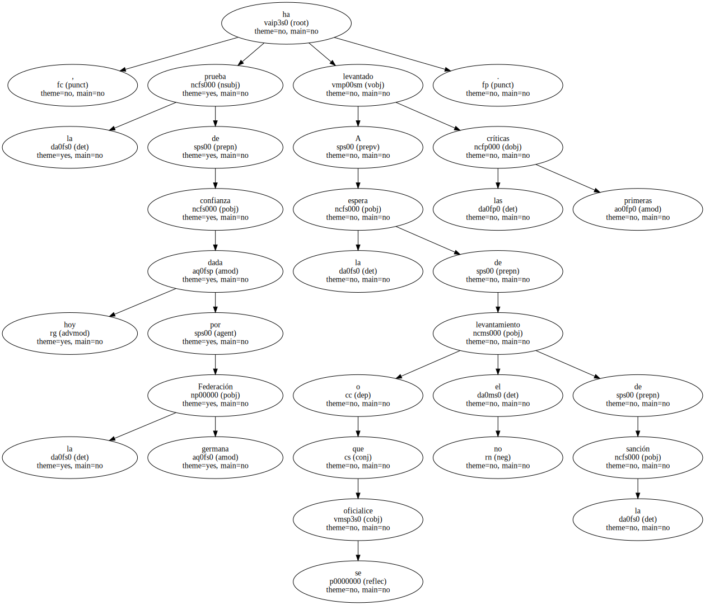Katrin Krabbe , la ex-plusmarquista mundial a la que se suspendió por tres años y que sigue luchando contra el dictamen , calificó hoy de extrañamente " generosa " la decisión de la Federación hacia su " chico de oro ".

Otros , como el presidente de la Federación Deportiva del estado de Sajonia ( este de Alemania ) , Hermann Winkler , ven en la resolución un claro signo de favoritismo hacia este deportista occidental , frente a la dureza empleada para los casos de dopaje en la órbita de la extinta Alemania comunista.
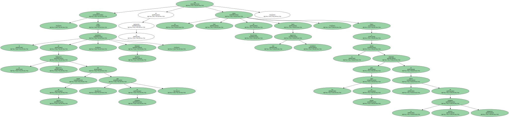